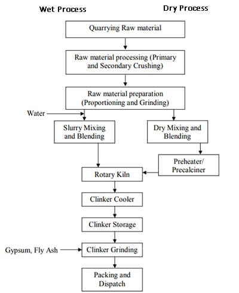
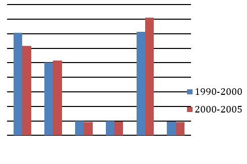

Ad Space

This flowchart illustrates the manufacturing process of cement, comparing two different methods: the Wet Process and the Dry Process. Both methods begin with the same three stages: Quarrying Raw material, Raw material processing (which involves primary and secondary crushing), and Raw material preparation (proportioning and grinding).
The key difference emerges at the mixing stage. In the Wet Process, water is added to the ground materials to create a "Slurry," which is then mixed and blended. In the Dry Process, the materials undergo "Dry Mixing and Blending" and are then passed through a "Preheater/Precalciner." Both the slurry from the wet process and the preheated mix from the dry process are then fed into the Rotary Kiln. After the kiln, the processes are identical: the resulting "Clinker" is cooled in a Clinker Cooler, put into Clinker Storage, and finally ground with Gypsum and Fly Ash during Clinker Grinding, followed by Packing and Dispatch. The primary distinction is the use of water to form a slurry versus dry heating before the kiln.

This bar chart compares the rates of tropical deforestation across four different regions for two time periods: 1990-2000 (represented by the first bar in each pair) and 2000-2005 (the second bar). The rate is measured in thousands of hectares per year.
In the 1990-2000 period, Africa had the highest rate of deforestation at approximately 4,100 thousand hectares per year, followed closely by South America at around 3,800. However, in the 2000-2005 period, this trend reversed. South America's deforestation rate increased significantly to about 4,300, making it the region with the most rapid deforestation. In contrast, Africa's rate saw a notable decrease to around 3,400.
Asia also experienced a decrease, dropping from approximately 3,000 in the first period to 2,600 in the second. Central America & Mexico had the lowest rates of deforestation in both periods, showing a very slight increase from around 700 to 750 thousand hectares per year. Overall, the chart indicates that while deforestation slowed in Africa and Asia, it accelerated in South America, making it the new global hotspot for tropical deforestation.
To: principal@msajce.ac.in
Subject: Request for Bonafide Certificate and Fee Structure for Scholarship
Respected Sir,
I am [Your Name], a first-year student in the B.E. Computer Science and Engineering department, and my registration number is [Your Reg. No.].
I am writing to request your assistance in issuing two documents required for a scholarship application. I am applying for the [Name of Scholarship, e.g., "Tamil Nadu Government Post-Matric Scholarship Scheme"] for the current academic year. The application guidelines require me to submit an official Bonafide Certificate from the college, as well as a detailed Fee Structure certificate for the first year.
These documents are essential for me to complete my application, and the deadline for submission is [mention a date, e.g., November 15, 2025].
I kindly request you to please issue these two certificates at your earliest convenience so that I can proceed with my application.
Thank you for your time and consideration.
Yours obediently,
[Your Name]
I Year - B.E. CSE
Reg. No: [Your Reg. No.]
[Your Name]
II Year, [Your Department]
[Your Reg. No.]
Mohamed Sathak AJ College of Engineering
October 25, 2025
To,
The Head of the Department
[Your Department]
Mohamed Sathak AJ College of Engineering
Chennai – 603103
Subject: Request for On-Duty (OD) from [Start Date] to [End Date]
Respected Sir/Madam,
I am writing to request On-Duty (OD) for one week, from [Start Date] to [End Date]. I have been selected to be a part of the official college team for "Tech-Fest 2025," the inter-college cultural competition organized by IIT, Mumbai. I will be participating in the [Your Event, e.g., "Paper Presentation / Robotics"] event.
This is a prestigious opportunity to represent our college at a national level. I assure you that I will collect all the notes for the classes I miss and will complete all academic commitments promptly upon my return.
I have attached the official invitation and my selection letter for your reference. I kindly request you to grant me On-Duty for the aforementioned dates to allow me to participate in this competition.
Thank you for your support.
Yours obediently,
(Your Signature)
[Your Name]
[Your Name]
I Year, [Your Department]
[Your Reg. No.]
Mohamed Sathak AJ College of Engineering
October 25, 2025
To,
The Principal
Mohamed Sathak AJ College of Engineering
Chennai – 603103
Subject: Application for 10-day leave on medical grounds
Respected Sir,
I am [Your Name], a first-year student of the [Your Department] (Reg. No: [Your Reg. No.]). I am writing to inform you that I am unable to attend college as I have been diagnosed with [e.g., severe jaundice / typhoid fever].
My doctor has advised me to take complete bed rest and undergo treatment for the next 10 days to ensure a full recovery. Therefore, I kindly request you to grant me leave from October 25, 2025, to November 3, 2025.
I have attached the medical certificate from my doctor for your reference. I will ensure that I copy all missed notes and complete any pending assignments as soon as I am fit to return to college.
Thank you for your understanding and consideration.
Yours obediently,
(Your Signature)
[Your Name]
Instructions for Students in the Examination Hall
Instructions for Candidates Attending an Interview
Laboratory Safety and Conduct Instructions
Ad Space